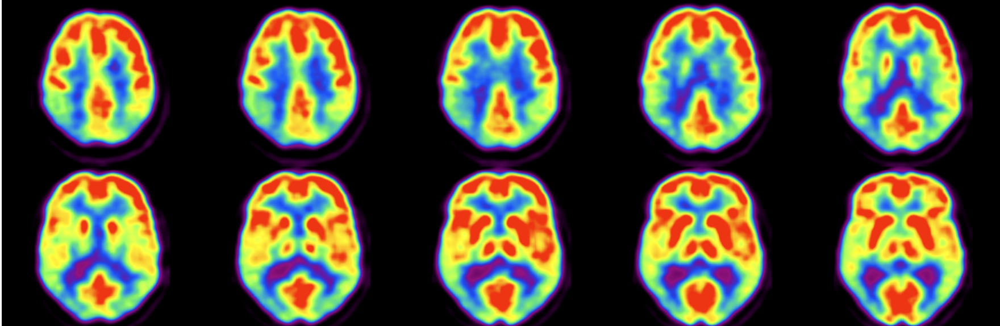
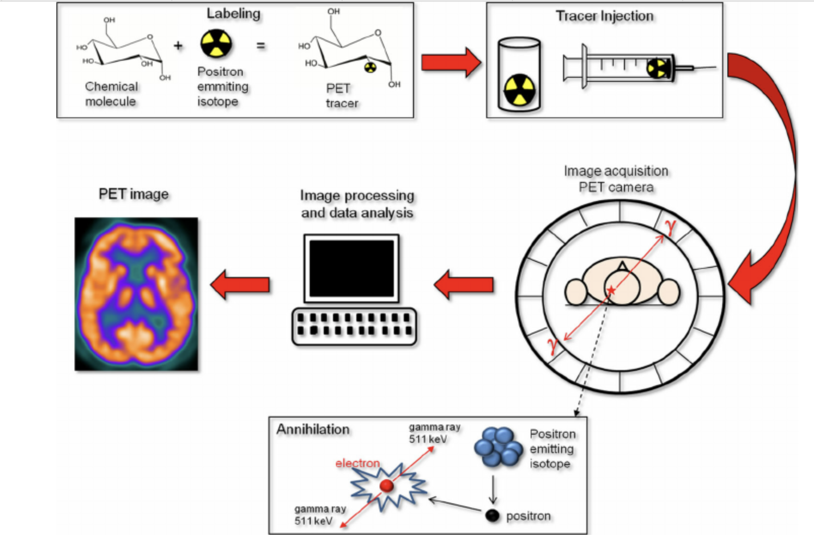

Welcome to the NeuroNest Tutorial on PET Data Analysis and Visualization!
Welcome to the NeuroNest tutorial on PET Data Analysis and Visualization!
Tutorial Time: 45 min
In this tutorial, we'll cover fundamental concepts essential for processing and visualizing Positron Emission Tomography (PET) data. The tutorial aims to bridge the gap between beginners and advanced researchers by providing hands-on learning, including modality overviews, relevant coding examples, and valuable resources.
What Positron Emission Tomography (PET) Is and How It Works
Positron Emission Tomography (PET) is an advanced imaging technique that employs positron-emitting radionuclides to visualize and measure metabolic processes within the body. It is widely used in medical diagnostics, particularly for examining brain function, cancer detection, and heart conditions.
Basic Principles of PET Imaging
- Radiotracer Injection: PET involves the administration of radiotracers, which are radioactive substances that emit positrons as they decay.
- Positron-Electron Interaction: Once inside the body, these positrons interact with electrons, resulting in the production of gamma rays.
- Gamma Ray Detection: These gamma rays are detected by the PET scanner, allowing for the visualization of functional processes within the body, particularly in the brain.
General PET Equipment and Technologies
Main Components of a PET Scanner
- Gantry: The main framework of the scanner that houses the detectors and supports the patient.
- Detectors: Usually made of scintillating crystals, these components capture the gamma rays produced by positron-electron interactions.
- Data Acquisition System: Collects and processes the signals from the detectors, converting them into digital images for analysis.
Overview of PET Radiotracers and Their Functions
- Radiotracer Production: Radiotracers are produced in cyclotrons and must be transported quickly to the imaging site due to their short half-lives.
- Targeting Biological Processes: Different radiotracers target specific biological processes, such as glucose metabolism, blood flow, or receptor binding.
Safety and Precautions in PET
Safety Considerations
- Radiation Exposure: Although PET involves exposure to radiation, the levels are generally low and deemed safe when following proper protocols.
- Safe Handling of Radiotracers: Strict guidelines are in place for handling and disposing of radioactive materials to protect both patients and healthcare workers.
- Minimizing Risk: Use of lead shielding, monitoring radiation doses, and following safety protocols minimize risks.
Patient Preparation for a PET Scan
- Fasting Requirements: Patients may need to fast for several hours before the scan to ensure accurate results.
- Medication Restrictions: Certain medications may need to be paused or adjusted prior to the scan.
- Procedure Expectations: Patients are informed about the procedure, including injection of the radiotracer, the scanning process, and the duration.
Types of PET Radiotracers
Explanation of Common PET Radiotracers
- FDG (Fluorodeoxyglucose): Commonly used for imaging glucose metabolism, particularly in oncology and neurology.
- Amyloid and Tau Tracers: Used in the assessment of Alzheimer's disease and other neurodegenerative disorders.
Comparison and Applications of Each Type of Radiotracer
- FDG: Best for detecting areas of high glucose metabolism, often indicative of cancerous tissues or active brain regions.
- Amyloid/Tau: Useful in detecting abnormal protein deposits in the brain, aiding in the diagnosis of Alzheimer's disease.
Examples of PET Images Obtained with Each Radiotracer
- FDG-PET: Shows areas of high glucose uptake, such as tumors or regions of the brain with high metabolic activity.
- Amyloid PET: Highlights amyloid plaque accumulation in the brain, a hallmark of Alzheimer's disease.
Applications of PET in Brain Imaging
Use of PET in Neurology and Psychiatry
- Neurological Disorders: PET is used to diagnose and monitor conditions like Alzheimer's disease, epilepsy, and brain tumors.
- Psychiatric Conditions: Helps in studying psychiatric disorders such as depression and schizophrenia by visualizing brain activity and receptor binding.
Common Clinical and Research Applications
- Alzheimer's Disease: Identifying amyloid plaques and tau tangles.
- Brain Tumors: Assessing tumor metabolism and monitoring treatment response.
- Psychiatric Studies: Investigating neurotransmitter activity and brain function in various mental health conditions.
Metabolic Imaging with PET
How PET is Used to Visualize Metabolic Processes in the Brain
- FDG-PET: Measures glucose metabolism, reflecting the metabolic activity of brain cells.
Explanation of Glucose Metabolism Imaging Using FDG-PET
- FDG Uptake: Brain cells take up FDG, which is then phosphorylated but not further metabolized, allowing for imaging.
- Reflecting Metabolic Activity: Areas with high FDG uptake indicate high metabolic activity.
Examples of Metabolic PET Studies and Their Implications
- Epilepsy: Identifying regions with abnormal metabolic activity to locate seizure foci.
- Cancer: Detecting and monitoring brain tumors through their metabolic activity.
Blood Flow Imaging with PET
How PET is Used to Measure Blood Flow in the Brain
- Cerebral Perfusion: PET can assess blood flow to different brain regions, crucial for understanding various neurological conditions.
Techniques and Radiotracers Used for Blood Flow Imaging
- H2[15O]: A commonly used tracer for quantifying cerebral blood flow.
- Other Tracers: Different tracers may be used depending on the specific requirements of the study.
Examples of Blood Flow PET Studies and Their Implications
- Stroke: Evaluating blood flow to identify ischemic areas.
- Dementia: Assessing blood flow patterns to distinguish between different types of dementia.
Computational Analysis of PET Data
Tools and Software for PET Data Analysis
- SPM (Statistical Parametric Mapping): Used for analyzing brain imaging data.
- PMOD: A comprehensive software suite for PET data analysis.
Steps for Preprocessing PET Data
- Motion Correction: Adjusting for patient movement during the scan.
- Spatial Normalization: Aligning images to a standard template.
- Attenuation Correction: Compensating for signal loss due to tissue absorption.
Common PET Analysis Techniques
- Kinetic Modeling: Quantifying tracer kinetics in the body.
- Statistical Parametric Mapping: Identifying statistically significant changes in brain activity.
- SUV Calculation: Standardized uptake value, a measure of tracer concentration.
Quantitative PET Imaging
Introduction to Quantitative PET Imaging and Its Importance
Accurate Diagnosis and Research: Quantifying PET data provides precise measurements critical for diagnosing and researching medical conditions.
Methods for Quantifying PET Data
- SUV (Standardized Uptake Value): Commonly used metric for quantifying tracer uptake.
- Patlak Analysis: A graphical method for analyzing tracer kinetics.
Examples of Quantitative PET Studies
- Oncology: Quantifying tumor metabolism and monitoring treatment response.
- Neurology: Measuring changes in brain function and metabolism in neurological diseases.
Comparison of PET with Other Imaging Modalities
Differences and Similarities Between PET and Other Imaging Techniques
- PET vs. MRI: PET provides functional imaging, while MRI offers detailed structural images.
- PET vs. CT: PET shows metabolic activity, whereas CT provides anatomical details.
Combined Imaging Approaches (e.g., PET/CT, PET/MRI) and Their Advantages
- PET/CT: Combines metabolic and anatomical information, improving diagnostic accuracy.
- PET/MRI: Integrates functional and structural data with superior soft-tissue contrast, beneficial for neurological and oncological applications.
INTERACTIVE TUTORIAL
Steps in PET Data Preprocessing and Analysis:
Step 1: Install Necessary Libraries
To process PET data, we need several Python libraries. Here, we will use the NiftyPET package for image reconstruction and analysis.
# Install necessary libraries
!pip install niftypet > /dev/null 2>&1
!pip install matplotlib numpy scipy nibabel > /dev/null 2>&1Step 2: Download and Load Dataset
We will use a dataset from a public repository. This dataset will include raw PET data and necessary files for preprocessing.
import os
# Define the data path
data_path = 'path_to_your_dataset'
# Check if the data files exist
if os.path.exists(data_path):
print("Data files are available.")
else:
print("Data files are not available. Please check the path.")Step 3: Preprocessing PET Data
3.1 Import Libraries
import numpy as np
import nibabel as nib
from niftypet import nipet, nimpa
import matplotlib.pyplot as plt
%matplotlib inline3.2 Load the Dataset
# Load the raw data
raw_data = nib.load(os.path.join(data_path, 'raw_pet_data.nii'))
# Load the attenuation map
attn_map = nib.load(os.path.join(data_path, 'attn_map.nii'))3.3 Visualization of Raw Data
# Visualize raw PET data
plt.imshow(raw_data.get_fdata()[:, :, raw_data.shape[2] // 2], cmap='hot')
plt.title('Raw PET Data')
plt.colorbar()
plt.show()Step 4: PET Data Reconstruction
Using NiftyPET, we will reconstruct the PET images from the raw data.
# Define the parameters for reconstruction
params = nipet.get_mmrparams()
lmdata = nipet.mmrhist(params)
# Perform image reconstruction
recon = nipet.mmrchain(
raw_data,
params,
histo=lmdata,
mu_h=attn_map,
itr=5,
fwhm=4.0,
recmod=3
)
# Get the reconstructed image
recon_img = recon['im']Step 5: Visualization of Reconstructed Data
# Visualize the reconstructed PET image
plt.imshow(recon_img[:, :, recon_img.shape[2] // 2], cmap='hot')
plt.title('Reconstructed PET Image')
plt.colorbar()
plt.show()Step 6: Quantitative Analysis
We will perform quantitative analysis such as calculating Standardized Uptake Value (SUV).
# Calculate SUV
suv_img = nimpa.suv(
recon_img,
injected_dose=370, # in MBq
body_weight=70, # in kg
scan_duration=3600 # in seconds
)
# Visualize SUV map
plt.imshow(suv_img[:, :, suv_img.shape[2] // 2], cmap='hot')
plt.title('SUV Map')
plt.colorbar()
plt.show()Step 7: Advanced Analysis and Partial Volume Correction
We will demonstrate advanced analysis techniques such as Partial Volume Correction (PVC).
# Apply partial volume correction
pvc_img = nimpa.pvc(recon_img, attn_map)
# Visualize PVC image
plt.imshow(pvc_img[:, :, pvc_img.shape[2] // 2], cmap='hot')
plt.title('Partial Volume Corrected Image')
plt.colorbar()
plt.show()Additional Resources
FAQ and Practical Tips
Q: How do I handle missing data files?
A: Ensure all paths are correct and data files are available. Re-download the dataset if necessary.
Q: What should I do if the reconstructed image looks distorted?
A: Check the reconstruction parameters and ensure the attenuation map is correctly applied.
Q: How can I improve the quality of the reconstructed image?
A: Adjust the reconstruction parameters such as iteration number and FWHM to achieve better results.
References
- Engle, J., Saberi, P., Bain, P., Ikram, A., Selim, M., & Soman, S. (2024). Oxygen extraction fraction (OEF) values and applications in neurological diseases. Neurological sciences: official journal of the Italian Neurological Society and of the Italian Society of Clinical Neurophysiology, 45(7), 3007–3020. https://doi.org/10.1007/s10072-024-07362-6
- Bini J. (2023). The historical progression of positron emission tomography research in neuroendocrinology. Frontiers in neuroendocrinology, 70, 101081. https://doi.org/10.1016/j.yfrne.2023.101081
- Visser, M., O'Brien, J. T., & Mak, E. (2024). In vivo imaging of synaptic density in neurodegenerative disorders with positron emission tomography: A systematic review. Ageing research reviews, 94, 102197. https://doi.org/10.1016/j.arr.2024.102197